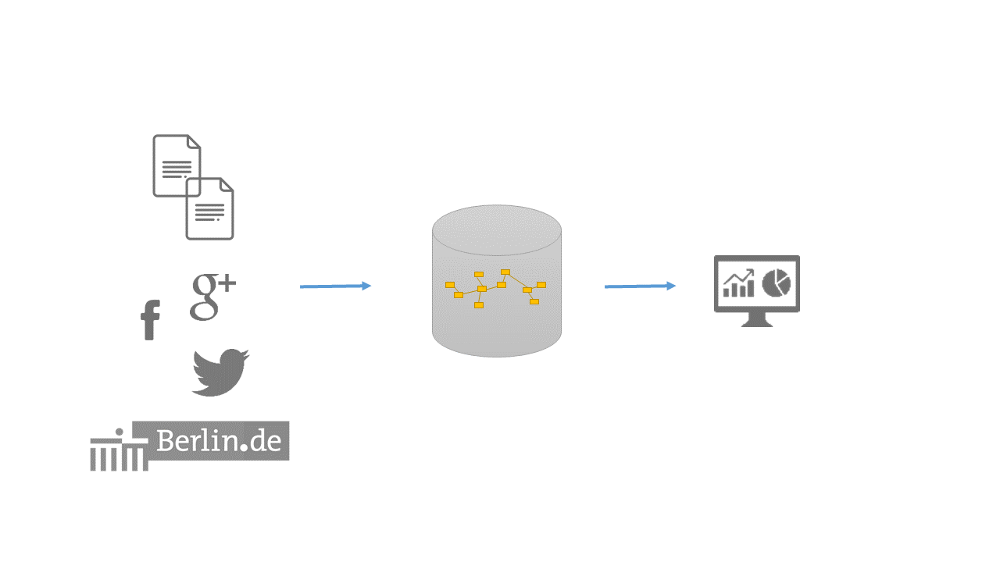
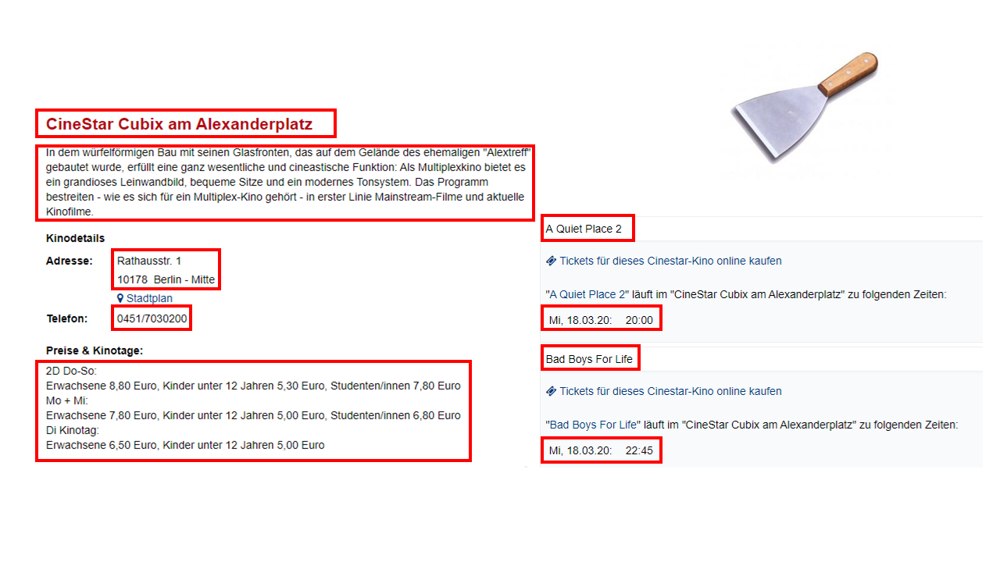
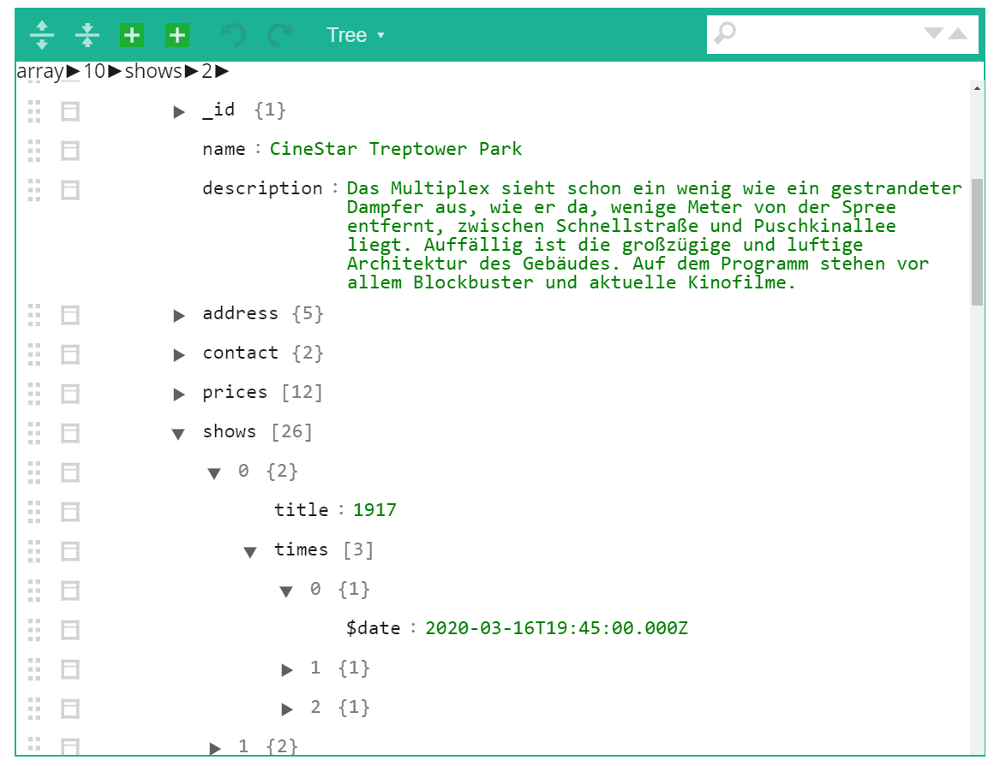
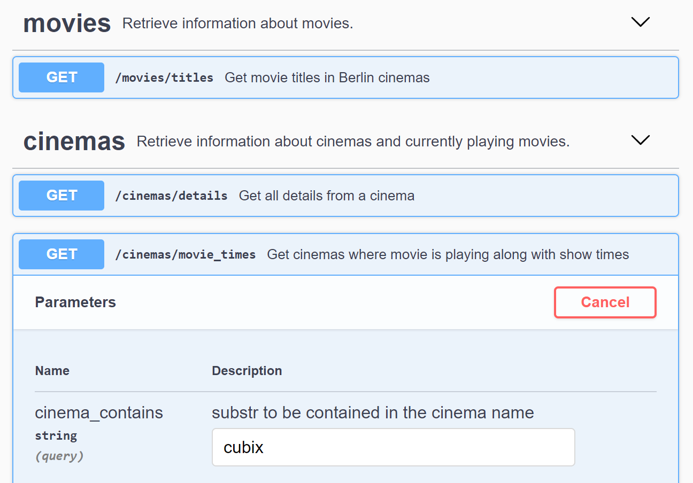

class: center, middle # Web Scraping with Scrapy and MongoDB running on Docker ### Dr. Laura Fernández Gallardo ### PyLadies, 31st March 2020 --- ## Architecture  --- class: center ## Task 1: ## Scrape the cinema program  --- class: center ## Task 2: ## Write scraped data to database and connect to it with a db client  --- class: center ## Task 3: ## Call REST API endpoints to retrieve information  --- class: center, middle # Hands-on. Have fun!